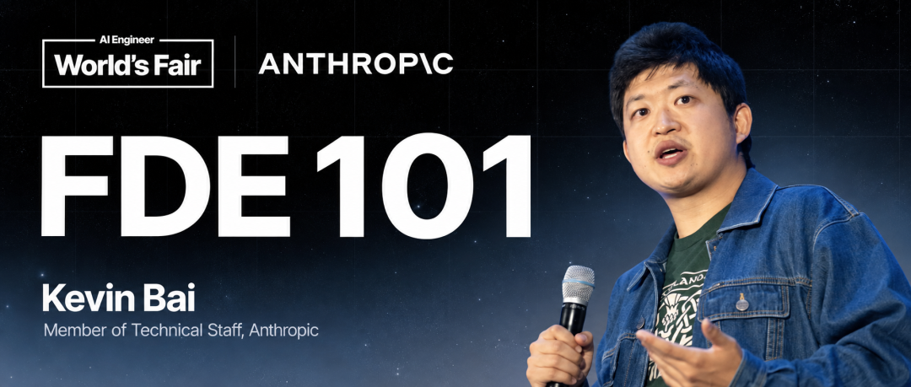

什么是FDE？Anthropic大牛这篇讲的可能是目前最好的
来源：微信公众号 归档日期：2026-09-21 抓取状态：成功 原文字符：1845｜配图：1 张
摘要速览
- FDE（Forward Deployed Engineer，前置部署工程师）是 Palantir 客单价做到 400 万美元的核心武器，本质是「向客户借出顶尖工程师，交付最终业务结果」。
- FDE ≠ 外包：手里永远有一套可复用平台底座，只留定制化代码在业务层，通用能力必须沉淀回平台。
- 何时需要 FDE：把「极其复杂的技术产品」卖给「完全不懂技术的传统客户」这一种场景才必须上。
- AI 时代让 FDE 从异类变主流：所有平台 Agent 化、所有软件都需高度定制，非技术客户搞不懂产品，必须有人驻场交付。
- 合格 FDE = 能写出高质量代码、且能被安全地放在客户面前沟通的软件工程师。
核心内容
- Palantir 客单价 400 万美元，远超 ServiceNow（120 万）、Workday（60 万），其余上市 SaaS 多数连 50 万都难突破。
- 传统行业（如石油天然气）的「管道流的是碳氢化合物，不是数据流」，没有能力基于技术平台自研，所以 Palantir 直接派驻工程师现场搭业务。
- 用二维象限判断——横轴产品复杂度、纵轴客户技术能力：卖给程序员走开发者关系，卖给非技术客户的可配置产品走销售，只有「复杂产品 × 非技术客户」才需要 FDE。
- FDE 避免了退化成外包团队：通用积木沉淀回平台，现场只做组装，防止代码库膨胀、利润被维护成本吃光。
- 启动 FDE 前要回答两个问题：真的需要 FDE 吗？是否拥有高度可复用的平台？
可执行启发
- 若面向传统行业巨头卖 Agent 产品，评估是否需要引入「部署 + 驻场」能力，而不是只给平台。
- 产品侧把「通用能力」和「客户定制」分层，通用迭代必须回流平台，避免陷入外包泥潭。
我的想法
（待补充）
原文沉淀
目录

↑阅读之前记得关注+星标⭐️，😄，每天才能第一时间接收到更新
公开上市的SaaS公司平均客单价极少能突破50万美元，但Palantir却做到了400万美元，背后的核心武器就是前置部署工程师FDE。
在近期的一场技术分享中，现任Anthropic应用AI团队技术成员、曾是Rippling首位FDE并在一周年内把团队带到25人的Kevin Bai，把FDE这套商业模式的底层逻辑彻底拆解了一遍。
整个软件行业正在被AI重构。
当几乎所有软件都变成Agent架构、变得极度可定制时，如果还指望非技术客户自己摸索安装，你的软件根本卖不出去。
为什么只有Palantir能拿下巨额订单？
看一组公开市场数据：
全美大盘里，ServiceNow的平均客单价是120万美元，Workday是60万美元，其余绝大多数公开上市的SaaS公司，客单价连50万美元的门槛都摸不到。
Palantir做到了400万美元。
Palantir的核心产品是Foundry平台。它的作用是把大企业各种杂乱的数据集中起来建立本体，把数据变成一个个具体的实体名词，并在上面构建应用。
如果你把这套纯技术底座直接卖给传统行业的巨头，比如石油天然气公司，对方的反应一定是：这确实把数据整理好了，但对我的业务有什么用？
传统行业的管道流的是碳氢化合物，不是数据流。他们根本没有像谷歌、Meta那样强大的软件工程团队来基于平台开发工具。
如果你让客户花大钱买平台，再花漫长时间培训自己的员工去开发，这笔交易很难做成。
Palantir的做法：直接向客户借出一批顶尖工程师。
客户不需要自己招人、管理或维持团队。这批工程师懂技术平台，也能像高级餐厅的服务生一样紧跟客户需求，直接在平台上为客户搭建出能解决实际业务问题的软件。
客户买的根本不是一段代码，也不是咨询工时，而是最终的业务结果。
什么样的公司才需要派工程师驻场？
软件工程师通常不适合直接面对客户。
派工程师上门，只适用于特定的商业场景。
如果划分一个二维象限：
横轴是产品复杂度，纵轴是客户的技术能力。
如果你卖的是GitHub或DataDog这种极度复杂的工具，你的买家是CTO、CIO，最终用户是程序员。他们本身具备吸收复杂技术的能力，走传统的开发者生态和开发者关系路线即可。
如果你卖的是Slack或Jira这类工具，产品本身功能繁多但属于可配置型，不需要二次开发，非技术客户点点鼠标就能用，走传统的销售主导模式完全走得通。
只有一种情况必须上FDE：你必须把极其复杂的技术产品，卖给完全不懂技术的传统客户。
为什么FDE不是外包软件开发？
很多初创公司在早期都会做设计合作伙伴模式，也就是创始团队扑上去，给客户贴身做定制，以此寻找产品市场契合点。
FDE本质上就是把这种设计伙伴模式放大到大企业规模。
但如果每个工程师都从零开始写代码，公司就会退化成纯粹的外包开发团队。
外包模式下，工程师要维护几十个不同的代码仓库，代码质量迅速恶化，维护成本会把公司的利润彻底吃干抹净，工程师也会因为痛苦而离职。
FDE和外包的本质区别在于平台底座。
FDE手里永远有一套现成的平台和通用功能模块。他们去现场不是从零手写系统，而是把现有的技术积木组装成客户需要的业务流程。
针对特定客户的定制化代码，只留在该客户的业务层；
所有具备通用价值的功能迭代，必须沉淀回底层平台。
启动FDE前必须回答两个问题
在决定建立FDE团队前，公司必须想清楚两件事：
第一，你真的需要FDE吗？
你的业务场景是不是必须把极其硬核的技术，推给完全不懂技术的传统买家？如果不是，传统的销售团队或开发者关系团队效率更高。
第二，你是否拥有一个高度可复用的平台？
即使有健全的平台，维护定制化业务的负担也非常重。如果你连通用平台都没有，就派工程师去一线干活，后期维护将变成一场灾难。
至于底层通用积木要做到多细，完全取决于业务场景。有的平台可以直接提供六成做好的应用，现场只需要定制剩下四成；而像AWS这类基础设施，提供的就是DynamoDB这样极其基础的原子积木。
AI时代让这个小众模式变成主流
Palantir刚起步的时候，这种驻场模式被视为极度特殊的异类。
但现在情况彻底变了。
AI降低了写代码的门槛，也让软件变得极度灵活。行业里到处都是面向法律、保险等各行各业的Agent产品。
几乎所有平台都在Agent化，几乎所有软件都需要根据客户业务高度定制。
这带来的直接后果是：你的非技术客户根本搞不懂你的AI产品到底能干什么。
如果你把交付和落地的希望寄托在客户自己的双手上，业务向上突破大客户、向横向纵向扩张都将极其艰难。
最后，什么样的工程师才是合格的FDE？
答案其实没有那么多玄学修饰：
能够写出高质量代码，并且能够被安全地放在客户面前沟通的软件工程师。
--end--
最后记得⭐️我，每天都在更新：如果觉得文章还不错的话可以点赞转发推荐评论
/...@作者：你说的完全正确（YAR师）
归属：归属：归属：[[02-输入/按主题/商业与变现/_index|商业与变现]]
归属：[[02-输入/按主题/商业与变现/_index|商业与变现]]